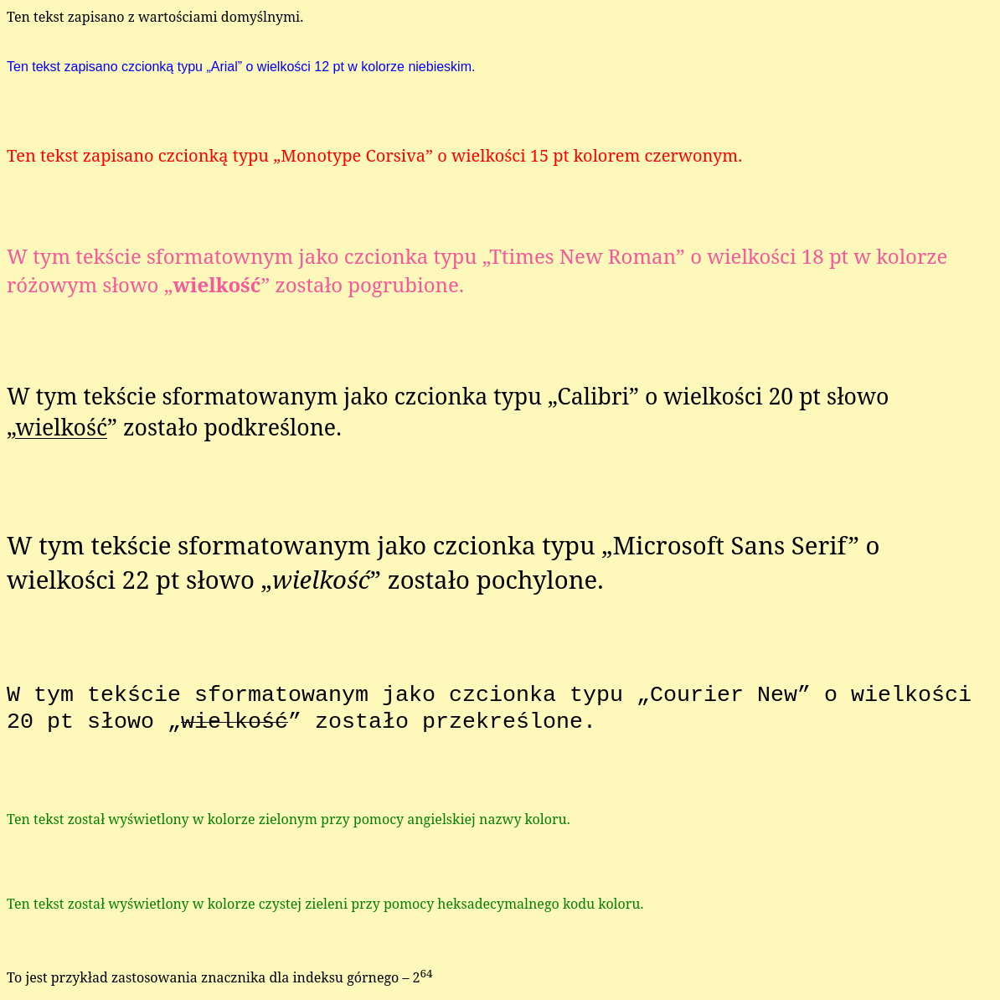
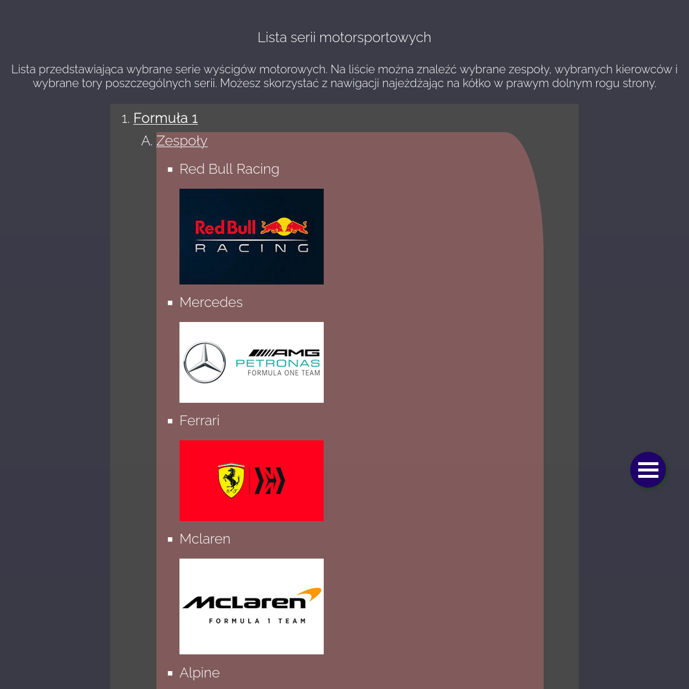
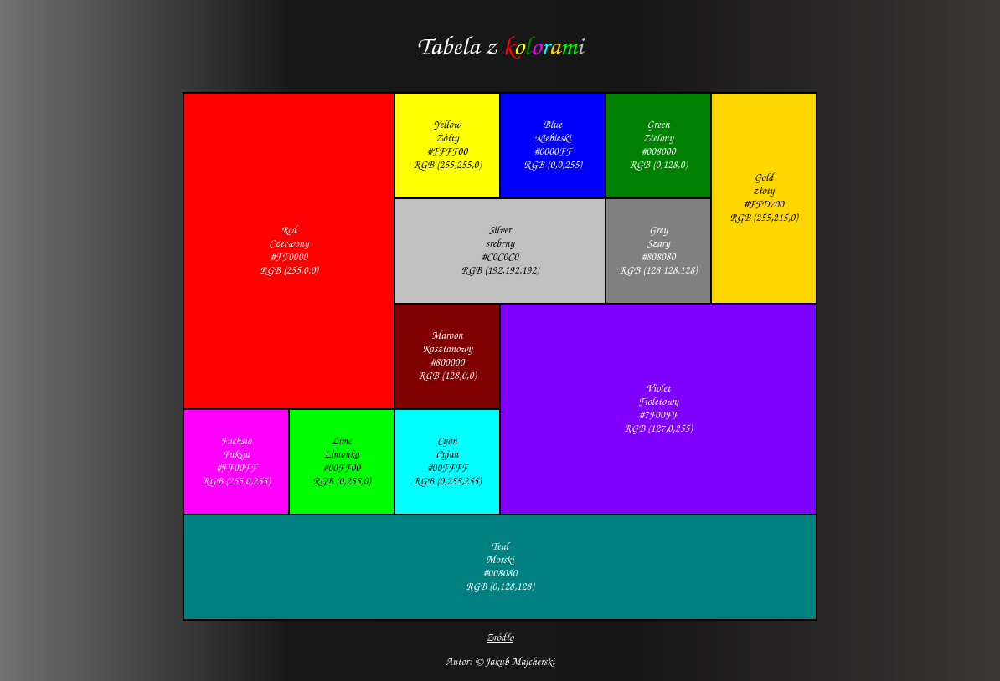
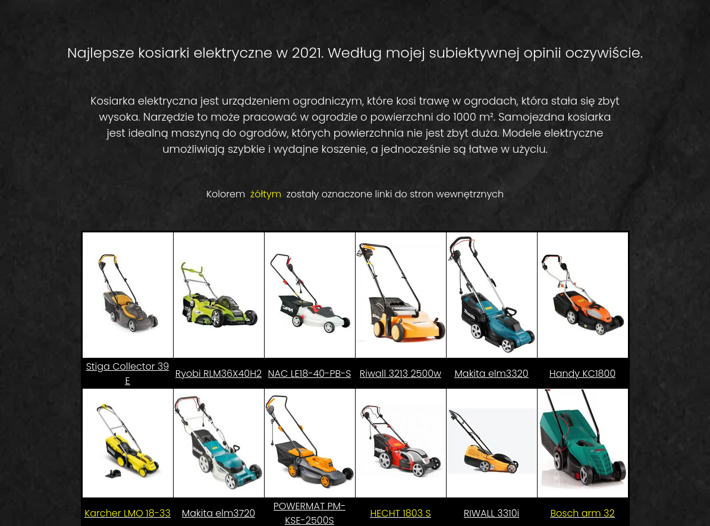
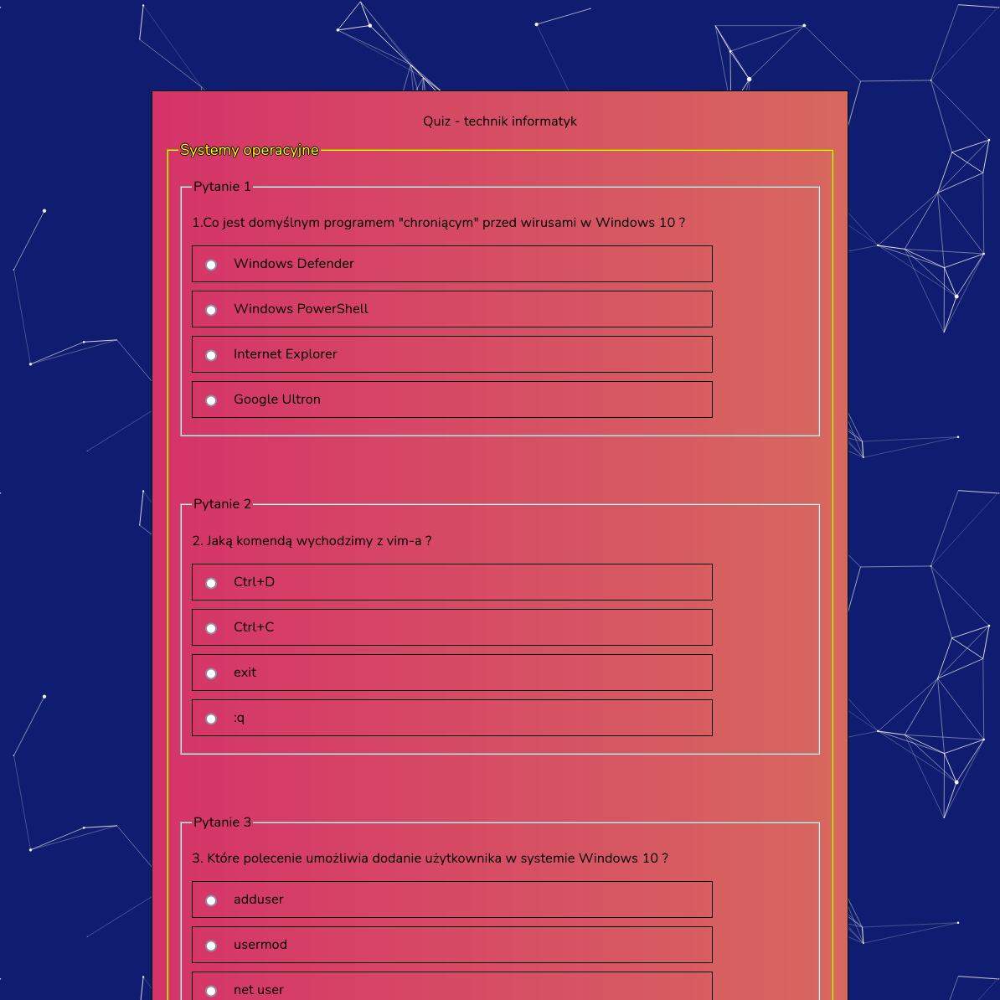

Co to jest HTML?
HTML (HyperText Markup Language) jest językiem używanym do tworzenia stron internetowych. Jest to także język znaczników, czyli oprócz głównego tekstu dokument zawiera w sobie informację opisujące go. Te dodatkowe informacje wplotywane są za pomocą znaczników, onegdaj wykorzystywanych w przemyśle wydawniczym. Dzięki językowi HTML możemy dodawać do tekstu akapity, hiperłącza, nagłówki, pliki graficzne czy multimedialne czy formularze. HTML określa także jak dokument będzie wyglądał w przeglądarce internetowej. Język ten używa znaczników występujących w parach, np: <body> </body>, <title> </title>. Dzięki nim w dokumencie wpleść również można język skryptowy, służacy do kontrolowania aplikacji. źródło
Były to pierwsze 3 minuty kursu video HTML autorstwa Mirosława Zelenta , cały film dostępny tutaj.
Co to jest CSS?
CSS, czyli kaskadowe arkusze stylów (od ang. Cascading Style Sheets) to język używany do opisu układu elementów na stronie WWW. Można za jego pomocą zdefiniować wiele parametrów, takich jak rodzaj czcionek, kolor tła, wyrównanie elementów na stronie itp. Powstał w 1996 roku w celu odseparowania struktury dokumentu od formy jego prezentacji. Jest kilka sposobów stosowania CSS, przykładowo: użycie wewnątrz danego dokumentu znacznika „style”, jednak najbardziej użyteczną jest posłużenie się osobnym arkuszem stylów, w którym zawrzemy wszystkie informacje dotyczące układu graficznego strony. źródło
Były to pierwsze 3 minuty kursu video CSS autorstwa Mirosława Zelenta , cały film dostępny tutaj.
Sprawdź co możesz tu znaleźć.
Formatowanie tekstu
Aby utrakcyjnić treść na naszej stronie, powinniśmy sformatować tekst oraz inne elementy wizualne tj. zmienić kolor czcionki, krój czcionki, kolor tła, ulokowanie tekstu na ekranie oraz zastowanie dodatkowych elementów takich jak: listy, łącza, pola tekstowe itd.

Listy
Aby pogrupować treśc, należy zastosować listę. Może być ona uporządkowana, nieuporządkowana, prosta, z podpunktami, zagnieżdżona. Pełna dowolność.

Tabela z kolorami
Innym sposobem na grupowanie treści jest tabela. Sposób prezentowania danych w tabeli utworzonej w języku HTML jest taki sam jak w każdej innej tabeli, znanej z życia codziennego.

Tabele, listy, łącza
Często na jedej stronie zachodzi potrzeba użycia różnych sposobów grupowania treści. Można wtedy zrobić mix wszystkich znanych sposobów i połączyć np. tabelę z listą.

Formularze
Gdy potrzebujemy uzyskać dane od użytkowników musimy użyć formualarza. Służą one do pobrania danych i przekazania ich serwerowi. Oferują przy tym dużą ilość i różnorodność pół do wprowadzania informacji.

© Jakub Majcherski